Lexislación drons. Categoría aberta
A categoría operacional "aberta" cobre todas as operacións con UAS que sexan de baixo risco operacional, como marca a normativa española e non requiren de ningunha autorización operacional nin dunha declaración por parte do operador do UAS.
A categoría operacional "aberta" cobre todas as operacións con UAS que sexan de baixo risco operacional, como marca a normativa española e non requiren de ningunha autorización operacional nin dunha declaración por parte do operador do UAS.
Subcategoría
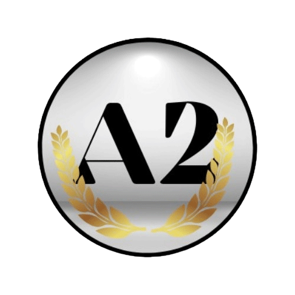
Subcategoría
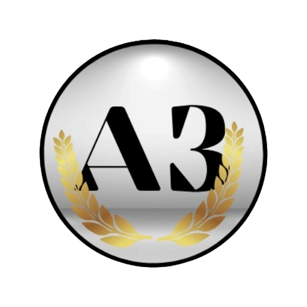
Subcategoría
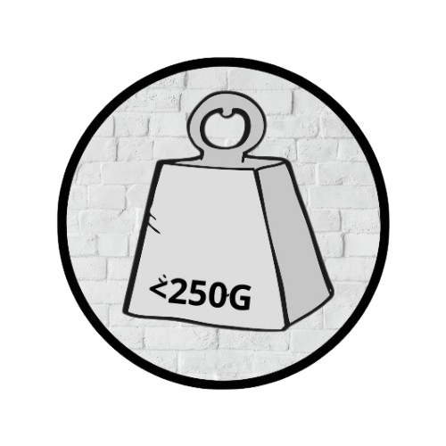
MTOM
"Maximun Take-off Mass"
"Masa máxima ao despegamento"
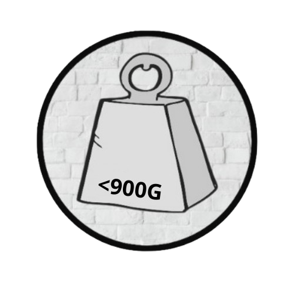
MTOM
"Maximun Take-off Mass"
"Masa máxima ao despegamento"
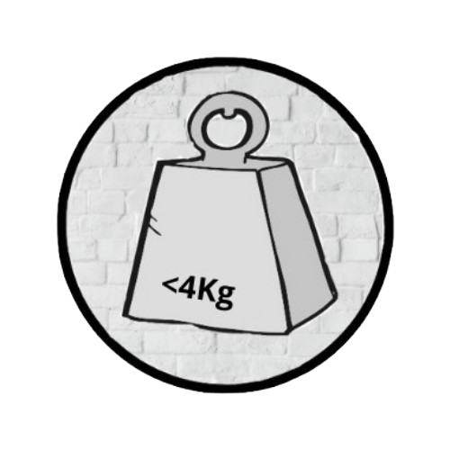
MTOM
"Maximun Take-off Mass"
"Masa máxima ao despegamento"
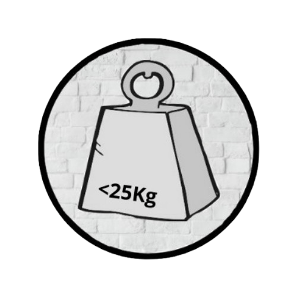
MTOM
"Maximun Take-off Mass"
"Masa máxima ao despegamento"
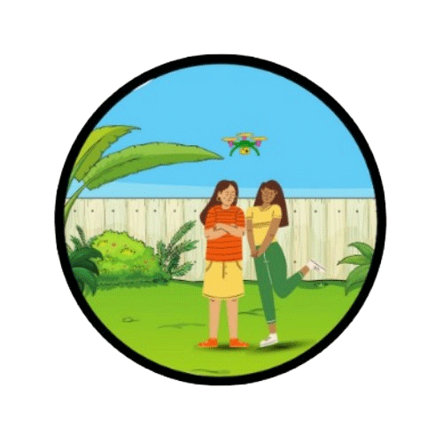
Non se recomenda voar por encima de persoas. Non voar por encima de ningunha persoa non participante
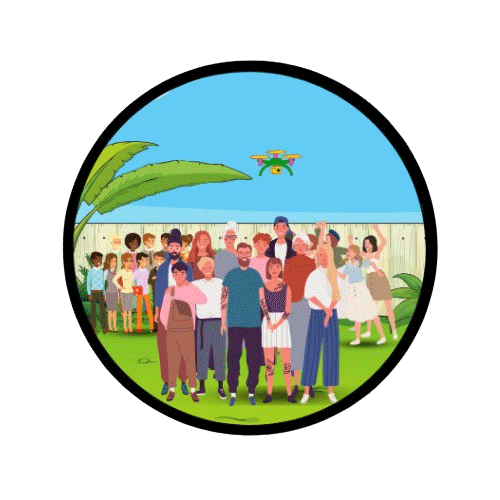
Non está permitido o voo sobre reunións de personas
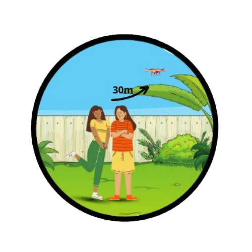
30m de calquer persona non participante
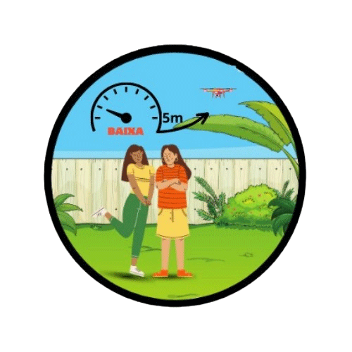
5m de distancia se dispón de modo de baixa velocidade
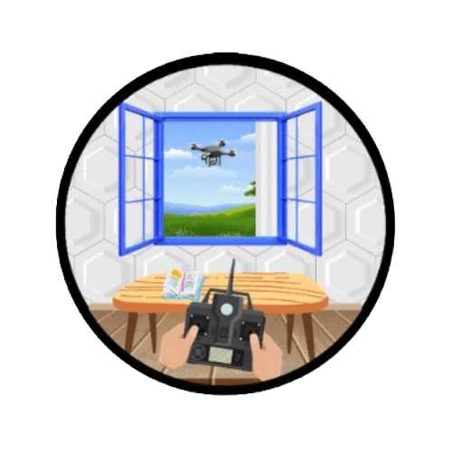
Familiarización co manual de usuario facilitado polo fabricante do UAS
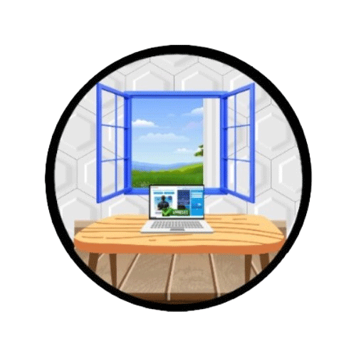
Proba de superación de formación en liña
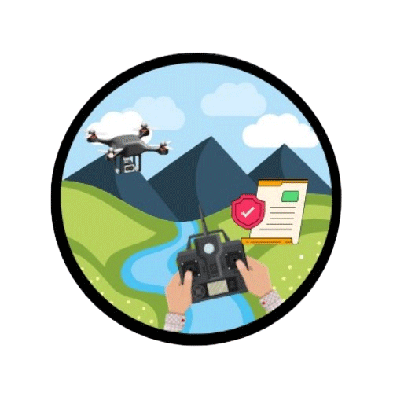
Declaración de formación autopráctica
Certificado de competencia de piloto a distancia
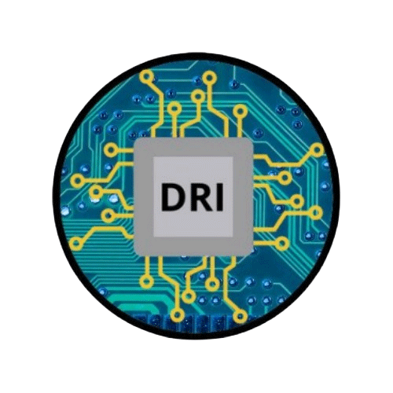
DRI
É un sistema de identificación remota que permitirá coñecer o número de operador sen necesidade de estar fisicamente co dron
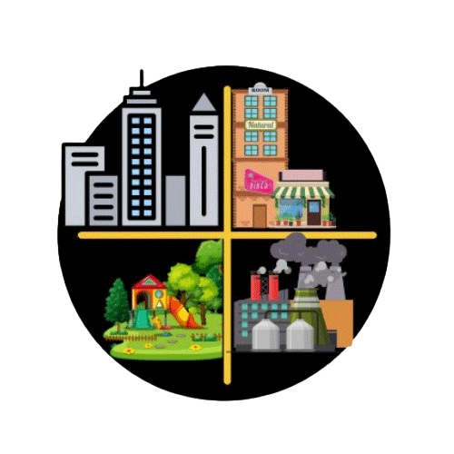
Distancia de 150m respecto de:
- Zonas residenciais
- Zonas comerciais
- Zonas industriais
- Zonas recreativas